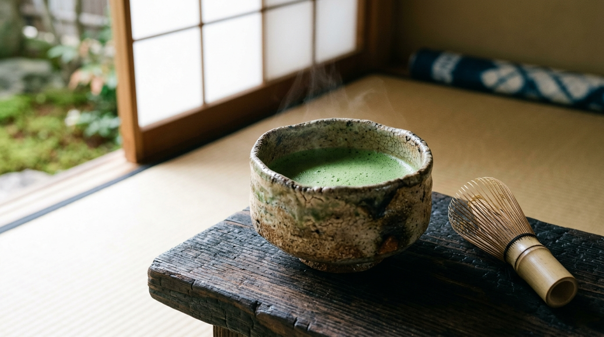
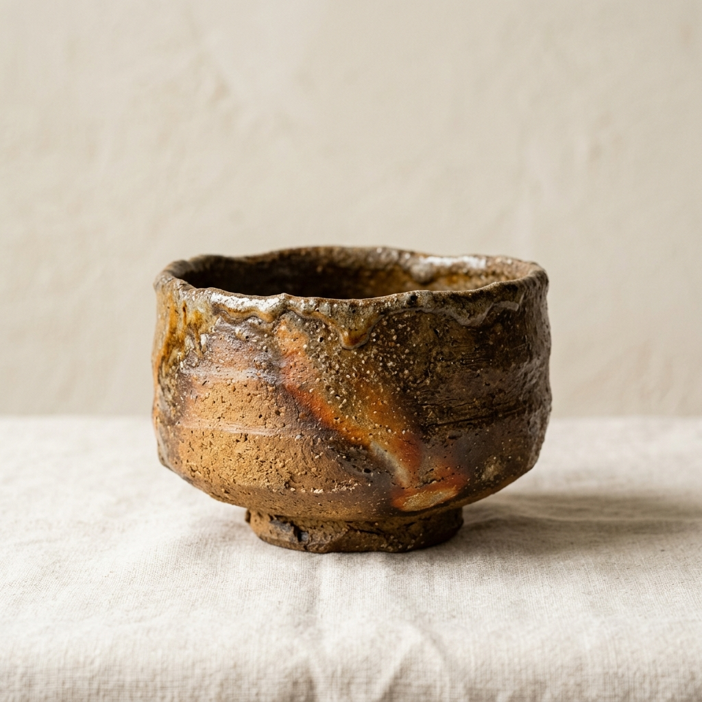
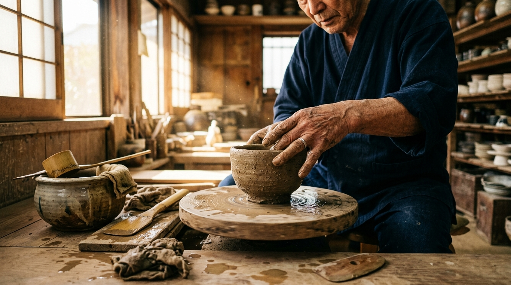

Small-batch, wood-fired matcha bowls and handcrafted teaware sculpted from native Kyoto clay. Each piece captures the unrepeatable choreography of red pine ash, ember glow, and wabi-sabi stillness.
In Japanese tea culture (*Chado*), the chawan is not merely an object—it is an intimate companion that cradles warm water, whisked powdered tea, and the quiet rhythm of the present moment.
We do not apply synthetic glazes. We surrender our vessels to seven sleepless days of split red-pine embers, letting the natural ash glaze bloom wherever the draft chooses.
Nestled among the cedar groves of eastern Kyoto, our studio adheres to centuries-old ceramic traditions. We age our local Shigaraki and Kurama mountain clays for up to five years, allowing organic minerals to ferment and develop micro-cavities that retain tea warmth.
When you hold a Kisen chawan in two hands, the natural weight, organic lip texture, and tactile warmth slow your breath, inviting a deep meditative pause into your daily life.
Click between vessel profiles and touch interactive glaze points to inspect ash melt, flame scorch, and tactile clay qualities.

Unglazed coarse Shigaraki mountain clay fired for 168 continuous hours in red pine embers. The deep charcoal surface is naturally glazed by melting pine ash deposits drifting through the Anagama kiln draft.
For seven consecutive days, five potters take continuous 4-hour shifts stoking split Japanese red pine (*Akamatsu*) around the clock. Select a firing stage below to inspect the kiln's transformation.

Pottery on the wheel is a silent conversation between muscle memory and the density of the earth. Every bowl is shaped by hand with no measuring calipers—allowing organic variations that fit the natural curvature of human palms.
Before entering the kiln, vessels air-dry on untreated cedar boards for twelve weeks, absorbing the ambient humidity changes of the Kyoto mountain seasons.
Every wood-fired piece is wrapped and delivered in traditional Japanese presentation worthy of tea masters and discerning collectors.
Custom-fitted Paulownia wood box (*Kiribako*) inscribed by hand in sumi ink with the kiln seal, bowl name, and master potter signature.
Traditionally dyed with natural turmeric (*Ukon-nuno*) to naturally protect fine ceramics against moisture and insects for generations.
Individually stamped archival parchment detailing the exact kiln chamber position, pine wood provenance, and firing coordinates.